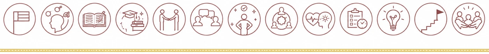
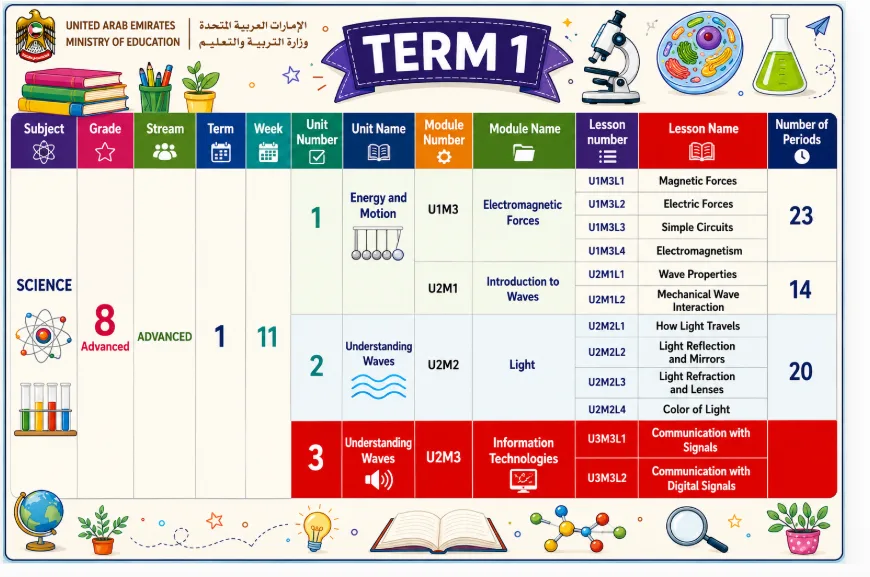
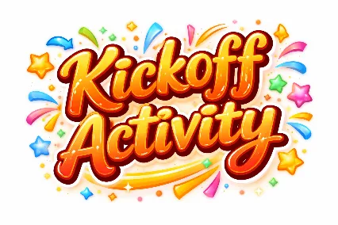
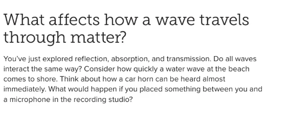
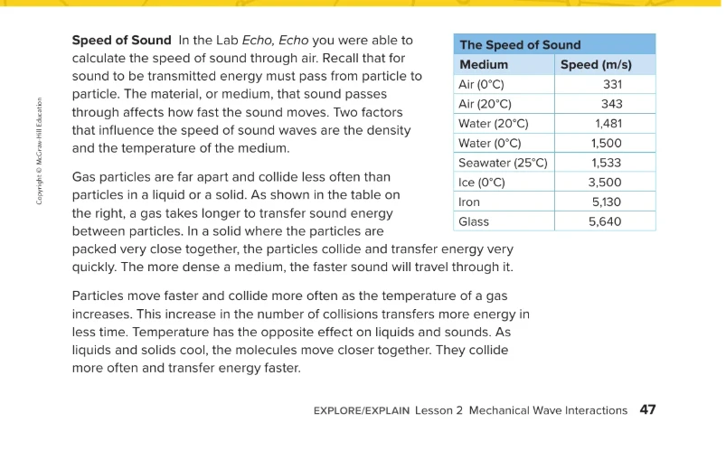
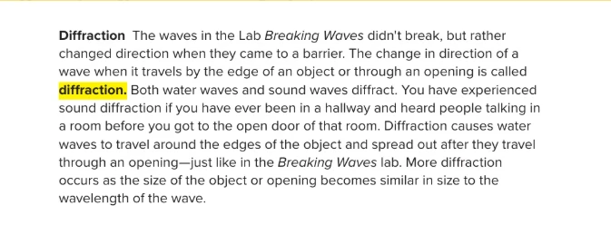
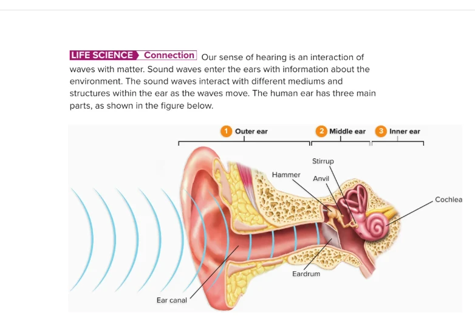
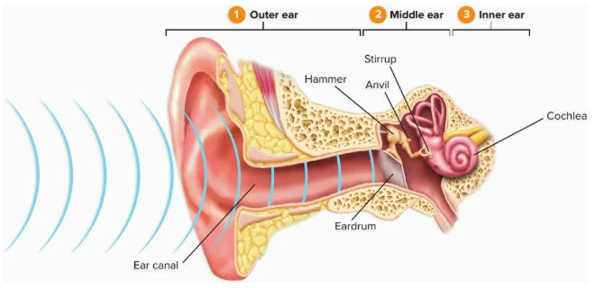

Speed of Sound, Diffraction & Hearing
Lesson 2 · Mechanical Wave Interactions

UAE NATIONAL CHARTER · الميثاق الوطنيTerm 1 at a glance
Grade 8 Advanced Science · We are in Unit 1, Module 2: Introduction to Waves, continuing Lesson 2: Mechanical Wave Interactions.

Meet your UAE Values Team
Five friends will coach you through today's speed-of-sound mission. Tap a character to discover their job today!
Lesson map · 45 minutes · tap any activity
Objectives, success criteria & key words
Explain what changes the speed of sound, what diffraction is, and how we hear.
- I can use the speed of sound table to compare how fast sound travels in gases, liquids and solids.
- I can explain how density and temperature change the speed of sound.
- I can define diffraction and explain when it is greatest.
- I can name the parts of the ear and describe how a sound wave travels through them.
Kickoff: starter + attendance

- Say “present” and settle in your seat.
- Think: in a storm over Hatta, why do you see the lightning before you hear the thunder?
- Answer the 5 true/false questions on the next slide on your own: no peeking at a friend's answer!
Pre-assessment: what do you know?
Hook: the sports day mystery
Sports day at Zayed Sports City…
Saif stands at the far end of the track, 340 m from the starter. He sees the starter's flag drop, then about one second later he hears BANG!
Hamdan is right next to him, with his ear pressed against the long metal railing. He hears the bang almost instantly.
Same bang, same distance. So why did Hamdan hear it first?

Watch: speed of sound, diffraction & hearing
A 2 min 51 s narrated video with subtitles. Turn the sound on, then listen for how sound travels.
- Which medium carries sound fastest, and which slowest?
- How does temperature change the speed of sound in air?
- When does the most diffraction happen?
- Name the parts of the ear the sound passes through.
Encounter: gas, liquid or solid?
What is the sound mainly travelling through? Tap each situation: GAS → LIQUID → SOLID. Then rank: which medium carries sound fastest?
Speed and diffraction (the unconventional version)
Pass a message along a line of students. If everyone stands shoulder to shoulder (a solid), the message flies along. If everyone stands far apart (a gas), it takes much longer. And when the message reaches an open door, it spreads out into the next room: that is diffraction.
Two factors change the speed of sound: the density and the temperature of the medium.
Diffraction is the change in direction of a wave when it travels by the edge of an object or through an opening.
Textbook: what affects how a wave travels?
Textbook: speed of sound

Textbook: diffraction

Textbook: life science connection

Sound speed race: 1 km through each medium
Each lane sends the same sound 1,000 m through a different medium, using the speeds in your textbook table. Predict the order, then press Race!
Temperature and the speed of sound in air
As a gas gets warmer, its particles move faster and collide more often, so sound travels faster. A good rule for air is:
speed ≈ 331 + 0.6 × temperature (°C)
You see lightning, then hear thunder 6 s later. How far away is the storm?
Diffraction: waves through a gap
Waves arrive from the left and pass through a gap in a barrier. More diffraction happens when the gap is similar in size to the wavelength.
Journey into the ear

Breaking Waves lab: waves through gaps
- Place the two blocks across the tray with a wide gap between them.
- Wave-maker: gently roll the dowel once to make a straight wave.
- Observer: watch the wave after it passes through the gap.
- Repeat with a narrow gap, then with a small object instead of the blocks. Record below.
| Set-up | What did the wave do after the gap or object? |
|---|---|
| Wide gap | Mostly carried straight on; it spread out only a little at the edges. |
| Narrow gap | Spread out in curved, circular waves: lots of diffraction. |
| Small object | The wave bent around the edges and joined up again behind the object. |
- Wave-maker: makes one gentle wave at a time.
- Gap-keeper: sets the blocks to the right gap.
- Observer and recorder: describes and records what the wave does.
Pause and check
Formative check: tap an answer. Wrong? Read the hint and try again!
Put the hearing journey in order
How does the starter's bang reach Saif's brain? Say the order with your partner, then tap the events from first to last. Tap a numbered event to undo.
Speed, diffraction & hearing worksheet (1/2)
B. A thin membrane that vibrates when sound hits it
C. The change in direction of a wave at an edge or opening
D. How closely packed the particles are
E. The snail-shaped, fluid-filled part of the inner ear
Speed, diffraction & hearing worksheet (2/2)
| Compare | Faster |
|---|---|
| Air at 0°C or air at 20°C | |
| Water (20°C) or iron | |
| Seawater (25°C) or air (20°C) | |
| Ice (0°C) or water (0°C) | |
| Glass or iron | |
| Water at 20°C or water at 0°C |
Why did Hamdan hear the starter's bang before Saif? Use medium, particles and speed.
✓ Hamdan heard the bang through the metal railing, a solid medium; Saif heard it through the air, a gas.
✓ In a solid the particles are packed close together, so they collide and pass the energy on quickly.
✓ So sound's speed in iron (about 5,130 m/s) is much faster than in air (about 343 m/s).
Green, orange or purple? Choose your level
Green · Support
- Complete: “Sound travels fastest through ____.”
- Circle: sound is faster in warm / cold air.
- True or false: sound can bend around corners.
- Is sound faster in water or in air?
1. solids
2. warm
3. True (diffraction)
4. water
Orange · At level
- Use the table: about how many times faster is sound in iron than in air at 20°C?
- Why can you hear people in a room before you reach its door?
- Describe the path of sound from the ear canal to the cochlea.
1. 5,130 ÷ 343 ≈ 15 times faster.
2. Sound diffracts through the doorway and spreads into the hallway.
3. Ear canal → eardrum vibrates → hammer, anvil, stirrup → fluid in the cochlea.
Purple · Challenge
- You hear thunder 6 s after the lightning. Sound travels at 343 m/s. How far away is the storm?
- Why does sound diffract around a doorway, but light does not?
- Why does heating speed up sound in a gas, but cooling speeds it up in a liquid?
1. 6 × 343 ≈ 2,058 m, about 2 km.
2. Sound wavelengths are similar to a doorway's size; light wavelengths are far smaller.
3. Hot gas particles move faster and collide more; cooled liquid molecules move closer together and collide more often.
Summative: Wave Master quiz
Mystery solved!
The bang reached Saif through the AIR, a gas, at about 343 m/s, so it took about 1 second to travel 340 m. Hamdan heard it through the METAL RAILING, a solid, where particles are packed tightly and pass the energy on very quickly: about 5,130 m/s. The sound reached him in less than a tenth of a second! (Saif saw the flag drop first because light travels far faster than sound.)
I can use the speed of sound table to compare how fast sound travels in gases, liquids and solids.
I can explain how density and temperature change the speed of sound.
I can define diffraction and explain when it is greatest.
I can name the parts of the ear and describe how a sound wave travels through them.
Which value did you show today?
Tap the character whose value you showed in this lesson. Then tell your partner one real example!
Find your way around every corner
Sound finds its way around corners and through every medium. So can you: keep going, keep learning!